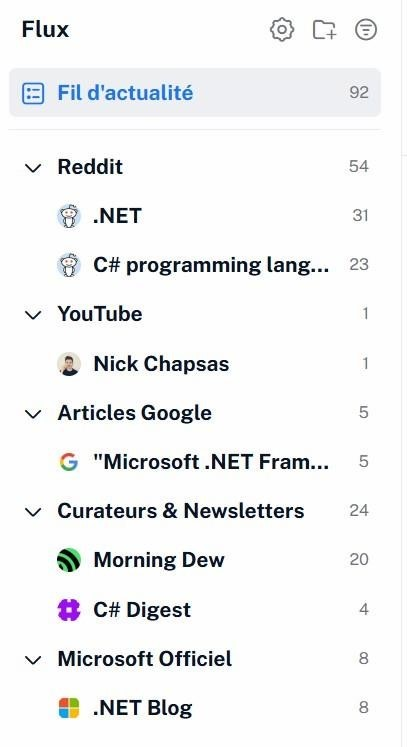
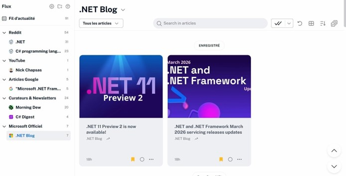
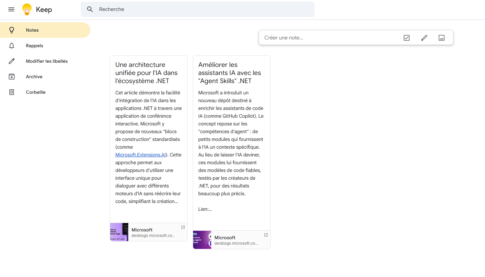

Veille Technologique
L'évolution de l'écosystème .NET et du langage C#
Ma Méthodologie
Pour optimiser ma veille technologique et aller à l'essentiel, j'ai adopté une démarche manuelle ciblée, assistée par l'IA :
Recherche et sélection
Je consulte mes flux d'actualités régulièrement et je sauvegarde en favoris les articles techniques ou annonces qui m'intéressent.
Synthèse assistée par IA
Je fournis l'article complet à une IA pour extraire rapidement un résumé condensé, les points clés et les impacts techniques.
Appropriation & Capitalisation
Je relis attentivement la synthèse pour assimiler les concepts et je l'ajoute à ma base de connaissances.
Aperçu de mes flux d'actualité


Mes Sources d'Information
Mes canaux de diffusion favoris pour suivre les innovations de l'écosystème Microsoft
Newsletters & Blogs
Morning Dew, C# Digest
Communautés
Reddit (r/dotnet, r/csharp)
Créateurs vidéo
Nick Chapsas (YouTube)
Documentation Officielle
.NET Blog, Microsoft Learn
Dernières synthèses d'articles
Améliorer les assistants IA avec les "Agent Skills" .NET
Microsoft a introduit un nouveau dépôt destiné à enrichir les assistants de code IA (comme GitHub Copilot). Le concept repose sur les "compétences d'agent" : de petits modules qui fournissent à l'IA un contexte spécifique. Au lieu de laisser l'IA deviner, ces modules lui fournissent des modèles de code fiables, testés par les créateurs de .NET, pour des résultats beaucoup plus précis.
Une architecture unifiée pour l'IA dans l'écosystème .NET
Cet article démontre la facilité d'intégration de l'IA dans les applications .NET à travers une application de conférence interactive. Microsoft y propose de nouveaux "blocs de construction" standardisés (comme Microsoft.Extensions.AI). Cette approche permet aux développeurs d'utiliser une interface unique pour dialoguer avec différents moteurs d'IA sans réécrire leur code, simplifiant la création de fonctionnalités avancées.
Aperçu de ma base de connaissances
Sauvegarde et catégorisation de mes synthèses d'articles sur Google Keep
